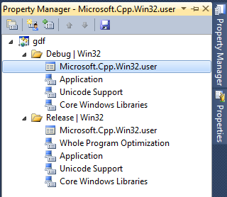
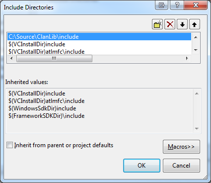
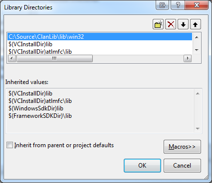

Unfortunately, it became alot more complex to add global includes to Visual Studio 2010/2012 compared to 2008 (read more). One option is to just add the include directories directly to your project, but a more permanent solution is to add it to the global property sheets.
First you have to create a new C++ solution, or open an existing one. Find the window called Property Manager and open it. In Visual Studio 2010/2012 and Visual Studio Express 2012 this is located at View->Other Windows->Property Manager. Under Express 2010 edition, this is located directly under the View menu (but you need to enable Expert Settings under Tools->Settings->Expert Settings first, then View->Property Manager).

Once the Property Manager is open, expand the Debug|Win32 section, and doubleclick the Microsoft.Cpp.Win32.user section. In the dialog box that opens up, edit the Include Directories to include the <yourpath>\include path.

Do the same for Library Directories <yourpath>\lib\win32.
If you are using 64 bit versions of ClanLib, you need to change the Platform combobox to x64 and modify the Include and Libs directories there as well.